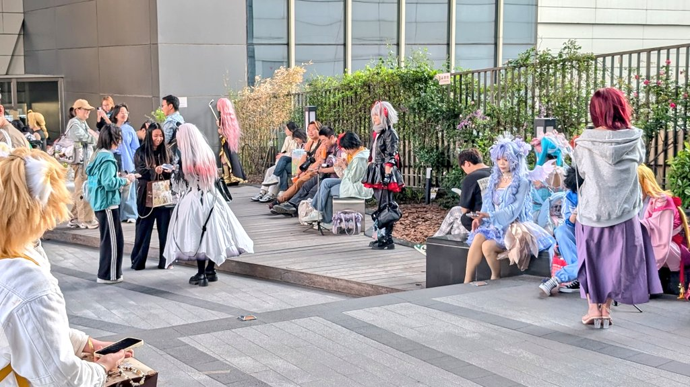
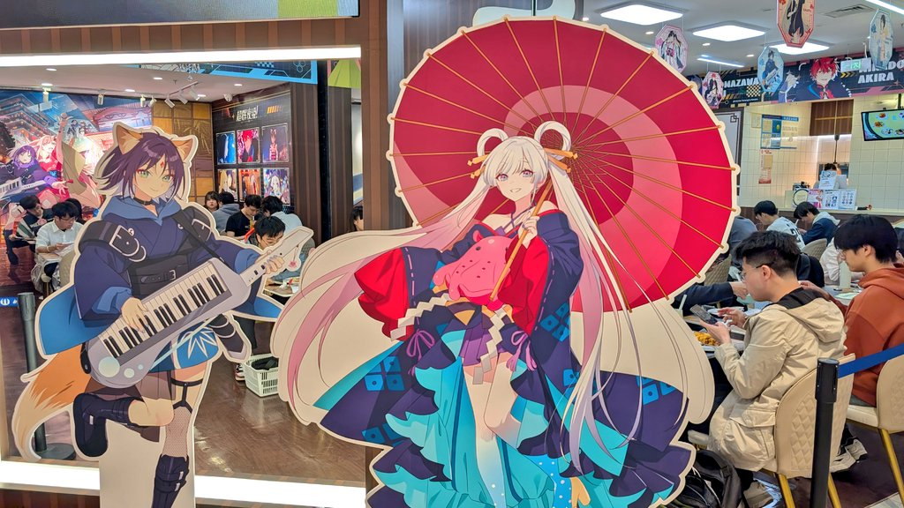

サイバー環状線
@CyberKanjousen
@dviolettchan 静安大悦城说是


Lillian
@Lily0727K
上海の二次元文化がすごいのは知っていたけど、今の勢いは想像を超えていました！
道を歩いても地下鉄乗っても、すぐ目に入ってくるのは大量の色鮮やかなコスプレ！
日本と中国の両方のIPが入り乱れ、関連店舗は超満員、とてつもない熱気です！
もはや秋葉原を超えて、世界最大の二次元の聖地です！ https://t.co/Pqln8GOCdg
紫云
@dviolettchan
@CyberKanjousen 这是上海啥地方，好奇